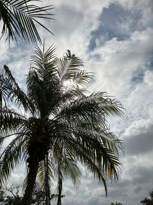
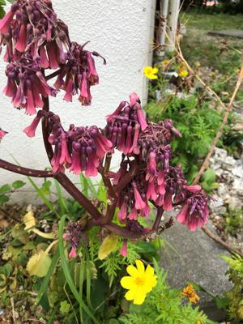

うるがいの話 ある日
最新: チーグル【うるがいの話 ある日】とは 一日だけのプログです
『うるがいの話』の最新一日だけのプログで、通信料が少なく経済的だ。カニの画像をクリックすると全ての日付が載る『うるがいの話』サイトを表示します
|
|
【うるがいの話】 うるがい(ｳﾙｶﾞｲ urugai)とは、『もずくがに』の名前でとても大きくなります。 |
|---|---|
|
|
【カミマヤーの話】 猫のことを方言でマヤーといいます。カミマヤー（kamimayaa）とは、神の猫のことです。 |
|
【たながぁの音楽】 たながぁ（ﾀﾅｶﾞｰ tanagaa）とは手長えびのことで、何種類かあり大きいのは車 エビぐらいになります。 |

|
【ぶながぁの話】 ぶながぁ(ﾌﾞﾅｶﾞｰ bunagaa)とは、赤い髪の毛、赤い身体、そして身長は１ｍ２０ｃｍ ぐらい、川の蟹を食べているの目撃された。場所は沖縄県国頭郡大宜味村のと ある村僕の隣近所に住んでいる爺さんから、聞いた話です。 |
|
|
【ギーマの話】 ギーマ(giima)とは、山原の里山に咲くスズランに似た、 花を付けます。実は食べられます、 気が付くと口の周りが紫になっています。 |
2023年05月05日 (金）チーグル
15:12
 
主人公の中学生が、母親に乳首が硬いのだがなんで？と質問するも母親はシカ
とする。おお、私達が中学生の男性の間では『チーグル』と呼んでいた、これ
になったあと、急に身長が伸びるのである。ネットでは、『男子中学生の乳首
にしこりができたらおそらく女性化乳房症』、フーン。しかしだ、みた映画は
螢川（1987）
芥川賞を受賞した同名小説の映画化で、昭和三十年代の富山を舞台に少年の成
長を描いた作品。
放送の前に、『本作品は作品のオリジナリティーを尊重するため、そのまま放
送します。』との趣旨のテロップが、流されていたが、ここには書けない事が
多々あった。そのたびにえ！いいのかと思った。さらにこの前みた
三文役者（2000）
生涯に３００本もの作品に出演し、脇役俳優として知られる殿山泰司の生涯
え！、ポルノでは？、よくカットしなかったな・・・
還暦を過ぎた私にとっては、いずれも感動した。
１５時０７分 ビットコインの総資産 ￥１１、３５１（↑６）